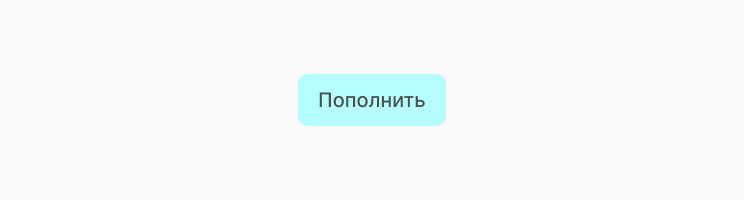
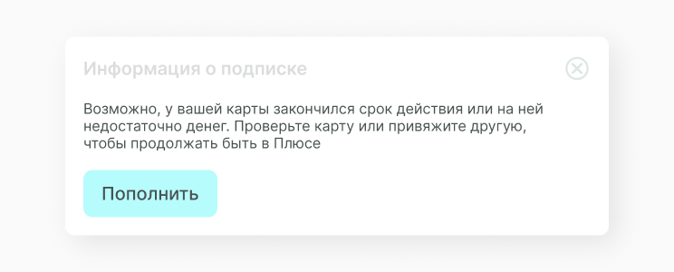
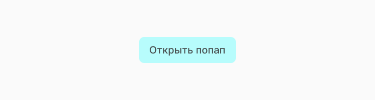
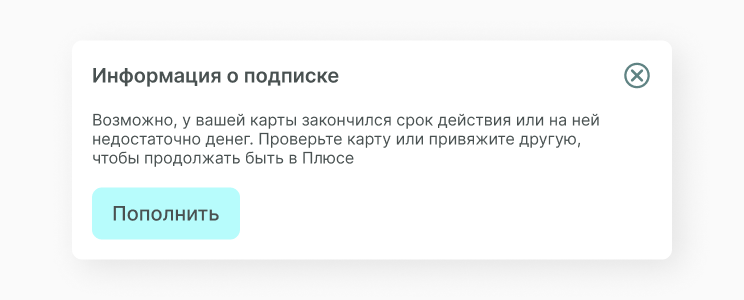

Alert
Alert отображает заметное сообщение и связанные с ним дополнительные действия. Alert отображает важное краткое сообщение и предлагает действие, которые пользователь может предпринять. Помимо функциональных кнопок alert всегда содержит иконку закрытия. Это нужно, чтобы у пользователя был выбор делать предложенное действие или нет. В нашем случа alert это только текстовая информация и кнопкой действия, функцию всплывающего окна выполняет popup.
Структура компонента
Alert состоит из текста сообщения и кнопки целевого действия. Мы просто оборачиваем эти два элемента в обертку и выводим в контейнер popup.
Button
Кнопки передают действия, которые пользователи могут применять.Кнопки должны указывать на то, что они могут инициировать действие, их состояние должно быть чётким, а также их должно быть легко найти среди других элементов интерфейса. Подробнее про кнопки button.
Вот так выглядит alert с заполненной информацией. В данном примере заголовок и иконка закрытия относятся к компоненту popup, поэтому мы их не выделяем.
Состояние компонента
Состояние у компонента такое же как и у popup, можешь прочитаать про это подробнее.
Реализация
Так как вся механика закрытия и открытия компонента прописана в popup, в alert мы только прописываем функцию нажатия на кнопку.
import React, { Component } from 'react'
import A_Button from '../../atoms/A_Button/A_Button.jsx'
import './O_Alert.css'
export default class O_Alert extends Component {
constructor(props) {
super(props)
this.handleButtonClick = this.handleButtonClick.bind(this)
}
handleButtonClick() {
console.log('Hello World!')
}
render() {
const { content } = this.props
return (
<div className="O_Alert">
<div className="A_AlertContent">{content}</div>
<A_Button text="Принять" handleClick={this.handleButtonClick} />
</div>
)
}
}Затем, в файле O_Alert.css прописываем стили для alert, нужно назначить только стили текста и отступы между кнопкой и параграфом.
.O_Alert {
width: 570px;
height: 100%;
display: flex;
flex-direction: column;
align-items: flex-start;
justify-content: space-around;
}
.O_Alert .A_AlertContent {
line-height: 140%;
font-weight: 200;
font-size: 16px;
color: #495151;
}Мы создали компонент, но описали только его функционал, теперь его нужно отрендерить. Нужно заполнить параграф контентом. Ты можешь увидеть как это делаем мы, а также посмотреть получившийся alert.
import React from 'react'
import ReactDOM from 'react-dom'
import S_Popup from '../../components/superorganisms/S_Popup/S_Popup.jsx'
import O_Alert from '../../components/organisms/O_Alert/O_Alert.jsx'
const content =
'Возможно, у вашей карты закончился срок действия или на ней недостаточно
денег. Проверьте карту или привяжите другую, чтобы продолжать быть в Плюсе.'
document.addEventListener('DOMContentLoaded', () => {
ReactDOM.render(
<S_Popup popupButtonText="Открыть попап" popupTitle="Информация о подписке">
<O_Alert content={content} />
</S_Popup>,
document.body.appendChild(document.createElement('div'))
)
})
Получаем следующий результат.
 Составляющие
В этот компонент часто выводятся следующие компоненты.